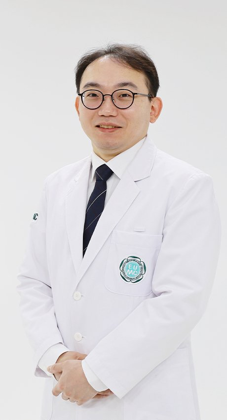

사건 초기 의학 검토
수임 여부를 정하기 전, 진료기록을 읽고 다툴 만한 의학적 쟁점이 있는지 정리합니다.
- 진료 경과 시간순 정리
- 주의의무·설명의무 쟁점 메모
- 추가로 확보할 기록 목록
기록 분량에 따라 견적 · 회신 기한 협의
현직 성형외과 교수가 진료기록을 직접 읽고, 사건에서 다툴 의학적 쟁점을 정리합니다. 국내 성형외과 의료소송 판결문을 분석해 국제 학술지에 발표해 온 경험으로, 재판부와 감정의가 어디를 보는지 알고 검토합니다.

강대훈, MD, PhD실제 사건이 아닌 설명용 예시입니다. 실제 검토는 전체 진료기록과 영상, 간호기록을 함께 봅니다.
수임 여부를 정하기 전, 진료기록을 읽고 다툴 만한 의학적 쟁점이 있는지 정리합니다.
제출용 또는 내부 검토용 의견서를 작성합니다. 문헌 근거를 붙여 재판부가 읽을 수 있는 말로 씁니다.
진행 중인 사건에서 감정과 변론 준비를 의학적으로 뒷받침합니다.
아래 의뢰 폼에 사건 개요와 필요한 자문을 남겨 주세요. 이 단계에서는 진료기록이나 환자 식별정보를 보내지 않으셔도 됩니다.
관련 의료기관과 의료진을 확인해, 맡을 수 없는 사건이면 바로 알려 드립니다.
자문 범위와 비용, 회신 기한을 정하고 간단한 자문 약정을 주고받은 뒤 기록을 받습니다.
쟁점 메모나 의견서로 회신하고, 필요하면 회의로 설명합니다. 이후 소송 단계 자문으로 이어서 볼 수 있습니다.
국내 성형외과 의료소송 판결문을 직접 모아 분석하고, 그 결과를 국제 학술지에 발표했습니다.
그 외 게재 학술지 · Plast Reconstr Surg · J Plast Reconstr Aesthet Surg · Ann Plast Surg · Head & Neck · Health Policy · Urology · Dermatol Surg · J Craniofac Surg · J Clin Med
남겨 주신 내용은 공개되지 않고 저에게만 전달됩니다. 영업일 기준 2일 안에 검토 가능 여부와 견적을 회신드립니다.
폼 대신 메일을 원하시면 아래 주소로 사무소명과 사건 개요를 보내 주세요.
gpk1234567@naver.com